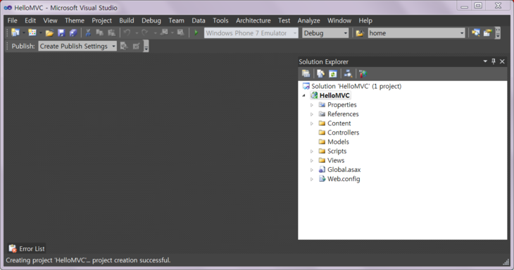
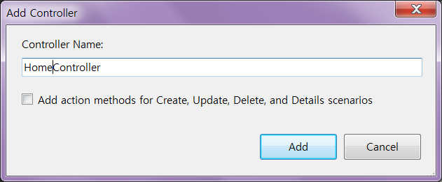
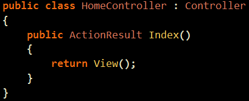
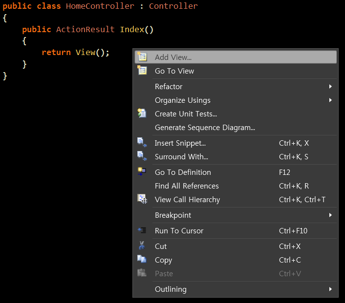
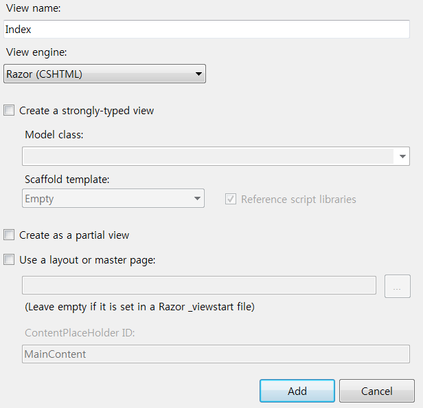
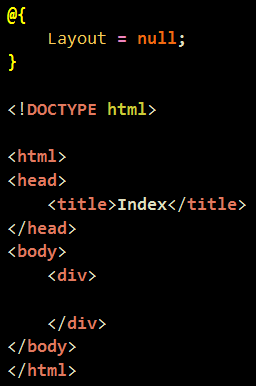
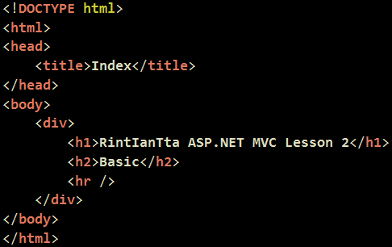
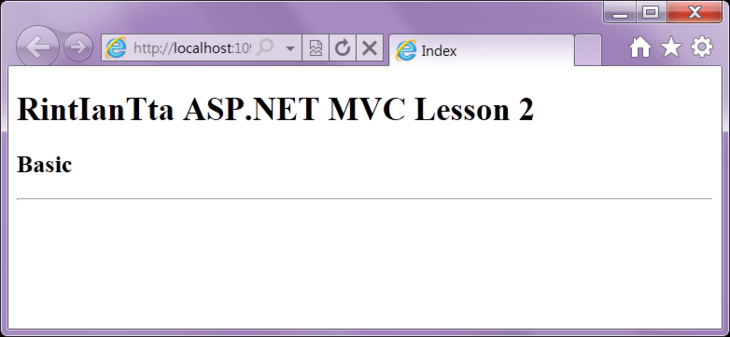

강의를 보실 때 주의하실점은 MVC개념이 나름 이해가 힘들어서 제가 설명을 위해 간단하게 설명을 합니다.
예로 오늘 강의에서는 public 으로된 메소드는 모두 액션이라고 하는데 nonaction이라고 표시를 하면 액션이 아닙니다.
간단하게 알려드리느라 간단하게 말씀 드린 것은 강의를 진행하며 차차 풀도록 하겠습니다.
시작합니다.

Controller를 추가해줍시다. 이름은 HomeController .. !
나중에 설명을 하겠지만, 아무 설정도 만지지 않는다면, 이녀석이 기본 시작컨트롤러로 설정이 됩니다.
2019년 MVC 프로젝트를 생성하면 HomeController가 기본으로 생성된다.

다음과 같은 컨트롤러에 Index() 가 있죠 .. ?
우선 public 으로 설정된 메소드는 모두 액션이라고 부른답니다.
지금은 간단하게 그렇다고 용어를 기억해주세요... ㅎ
액션이란 뷰를 준비하기 바로 이전 단계에요.
이녀석에서 일을 처리하면 바로 화면에 무언가를 띄우게 된답니다.
그녀석을 뷰라고 해요. 뷰란 화면이죠 ㅇㅅㅇ .. ?
그럼 우리는 어떤 화면을 띄울 것인지 이 액션의 리턴값으로 설정을 해주어야한답니다.
지난번에는 string을 리턴함으로써 그녀석이 화면에 띄워진겁니다.
하지만, 우리가 여기에 string으로 일일히 HTML을 치고 있을수는 없지않습니까 .. ?!

그래서, HTML과 이녀석을 연결해주기 위해 작업을 해주어야한답니다.
메소드안을 잡고 마우스 오른쪽버튼클릭을 하시고 뷰를 추가해줍니다.
워후... 이건 꿀팁같다.

Razor를 선택해주십니다.
"전 Razor가 없습니다..?!"
『제목을 보시면 ASP.NET MVC3 랍니다. ㅎㅎ』
나도 지금은 Razor이 없다. 중요한건 MVC니까.
쨌건, 체크는 다 해제해주시고 Add를 눌러줍니다

그럼 아주 상콤하게 이런 뷰가 나타나게된답니다.
"『@』이건 뭔가요 .. ?"
『그게 Razor, CSHTML문법인데요. 다음강의부터 살짝 살펴보도록합시다. ㅎㅎ』
음, 보시면 아실지 모르겠는데 생성이 바로 HTML5 형태로됩니다.
마이크로소프트도 HTML5를 상당히 염두해두고 있다는 이야기같습니다. ㅎ
-_-....만드는게 많이 변했음. 선택에 따라 만들어지는 폼도 많이 바뀜. 암튼 MVC를 이해하려 하자.

쨌건, 모양을 만들어줘봅시다.

그리고 여시면 Home 컨트롤러의 Index 액션이 실행된답니다.
그럼 뷰를 리턴해주게됩니다.
우리가 Index 액션을 Index.cshtml 이라는 녀석과 연결했지요 .. ?
따라서 Index 액션은 Index.cshtml 이라는 녀석을 화면에 띄우게 된답니다.
그래서 화면을 우리가 볼 수 있는 것이랍니다.
오늘의 결과입니다.
"뭔가요 이게, 이런건 ASP.NET 강의 0강에서나 Hello World 띄울 때 쓰는 예제 아닙니까."
『....』
